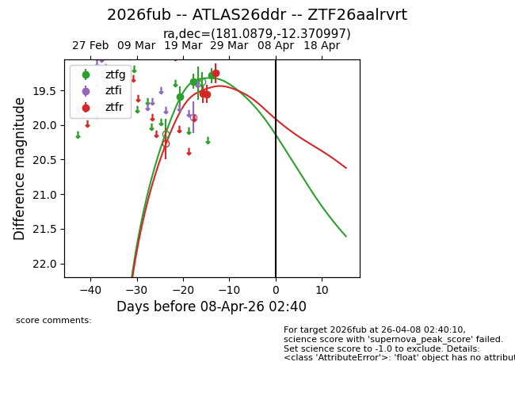
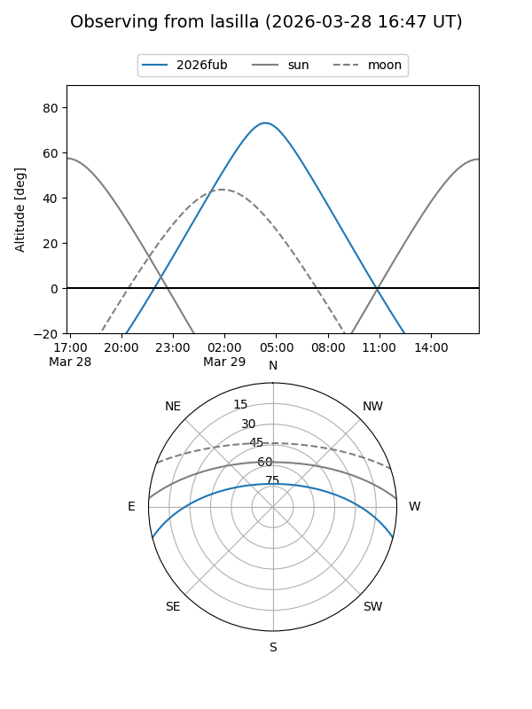
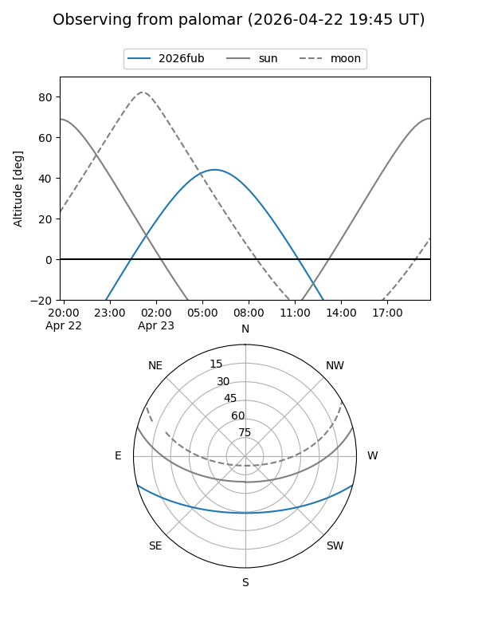
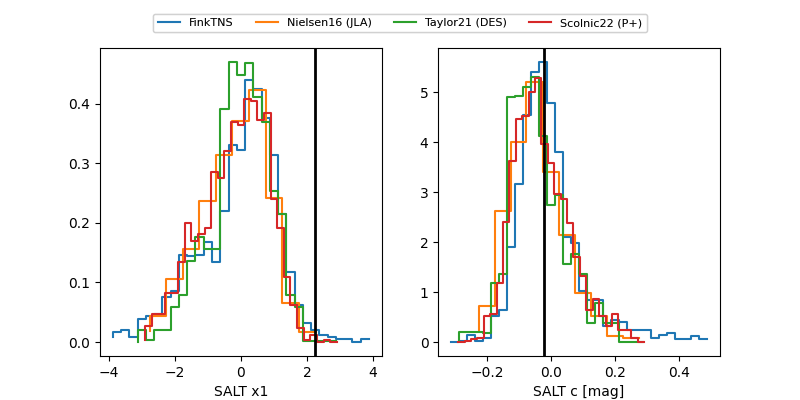

2026fub
Target 2026fub at 2026-04-08 02:45
Aliases and brokers:
FINK: link
Lasair: link
ALeRCE: link
TNS: link
YSE: link
alt names
ZTF26aalrvrt (ztf,fink_ztf)
2026fub (tns,yse)
ATLAS26ddr (atlas)
Coordinates:
equatorial (ra, dec) = 181.0879,-12.37100
equatorial (HMS+DMS) = 12:04:21.09,-12:22:15.59
galactic (l, b) = (285.2927,+48.88140)
Flags:
Photometry:
last ztfg=19.28, ztfr=19.25
3 ztfg, 3 ztfr detections
Lightcurve

Visibility


Additional plots
